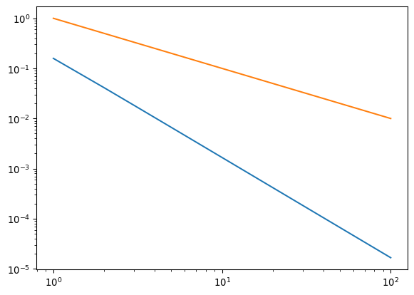

suma = 0
n = 100
for i in range(n):
suma += iAlgoritmos y estabilidad
Evaluamos los algoritmos según tres criterios: Eficiencia, convergencia y estabilidad.
Eficiciencia de los algoritmos
Para cálculos pesados, es necesario estimar la eficiencia del algoritmo. A veces cálculos que parecen inocentes se hacen demasiado pesadoos incluso para un computador.
Para analizar la eficiencia de un algoritmo se estima el número de pasos involucrados. Por ejemplo:
suma = sum(range(n))Este algoritmo toma \(n\) pasos, ya que debe realizar \(n\) operaciones. Decimos que su eficiencia es de orden \(\mathcal{O}(n)\).
A veces es necesario anidar ciclos, esto empieza a aumentar el número de pasos
suma = 0
n = 100
for i in range(n):
for j in range(i):
suma += jEste algoritmo toma mucho más tiempo porque el primer ciclo toma \(n\) pasos y el siguiente toma \(i\) pasos, Como \(i\) puede llegar hasta \(n(n-1)/2\) pasos. Cuando \(n\) es un número muy grande esto es aproximadamente igual a \(n^2/2\). En este caso decimos que la eficiencia del algoritmo es del orden \(\mathcal{O}(n^2)\).
A los algoritmos con una eficiencia de orden \(\mathcal{O}(n^c)\), donde \(c\) es una constante numérica, se los llama algoritmos de eficiencia polinomial.
Los algoritmos más eficientes posibles son los que tienen una eficiencia logarítmica \(\mathcal{O}(\log n)\) (y en informática normalmente se usa el logaritmo base \(2\) en este contexto. Veremos un ejemplo de uno de estos algoritmos próximamente.
Los peores algoritmos son los que tienen un crecimiento exponencial, por ejemplo \(\mathcal{O}(2^n)\), Estos se hacen extremadamente difíciles de ejecutar para un computado incluso para valores modestos de \(n\).
import matplotlib.pyplot as plt
import numpy as np
n = np.arange(1,50)
log = np.log(n)/np.log(2)
pol2 = n**2
pol4 = n**4
exp = 2**n
plt.scatter(n, log, label = '$\log_2$')
plt.scatter(n, pol2, label = '$n^2$')
plt.scatter(n, pol4, label = '$n^4$')
plt.scatter(n, exp, label = 'exp')
plt.legend()<>:10: SyntaxWarning: invalid escape sequence '\l'
<>:10: SyntaxWarning: invalid escape sequence '\l'
/tmp/ipykernel_3861489/2146404212.py:10: SyntaxWarning: invalid escape sequence '\l'
plt.scatter(n, log, label = '$\log_2$')Precisión y convergencia de los algoritmos
Además de la eficiencia de un algoritmo, también es importante su precisión. Los métodos numéricos consisten en encontrar soluciones aproximadas a los problemas y será importante tener una estimacióon del error cometido. El error cometido en un algoritmo numérico nos da una idea de su precisión. Si el error disminuye a medida que se ejecuta un algoritmo de más pasos, decimos que converge.
El método numérico normalmente consiste en encontrar una sucesión de números que convergen al resultado requerido. Supongamos que tenemos una cierta sucesión \(\{\alpha_n\}\) que converge al resultado \(\alpha\). Por otra parte supongamos que tenemos otra sucesión \(\{\beta_n\}\) que converge a cero. Decimos que el algoritmo converge a \(\alpha\) a una razón \(\mathcal{O}(\beta_n)\) si se cumple que
\[ |\alpha_n - \alpha| < K|\beta_n|\,, \]
para alguna constante \(K\).
Normalmente se toma \(\beta_n = 1/n^c\) para alguna potencia \(c\). Los algoritmos que convergen más rápido tienen \(c\) alto.
Por ejemplo, consideremos la sucesión \(\{n \sin(1/n)\}\), esta converge a \(1\) a medida que \(n\) crece. Otra sucesión que converge a \(1\) es \(\{1 - 1/n\}\).
suc1 = []
suc2 = []
for n in range(1,101):
suc1.append(1 - n*np.sin(1/n))
suc2.append(1/n)plt.scatter(np.arange(1,101), suc1)
plt.scatter(np.arange(1,101), suc2)plt.loglog(np.arange(1,101), suc1)
plt.loglog(np.arange(1,101), suc2)
Otro ejemplo es un algoritmo para calcular \(\pi\), llamada fórmula de Leibniz
\[ \pi = 4 - \frac{4}{3} + \frac{4}{5} - \frac{4}{7} + \frac{4}{9} - \dots \]
(Esto viene del hecho que \(\pi/4 = \tan^{-1}(1)\) al hacer la expanción de Taylor de la tangente inversa).
Comparada con otra fórmula que converge más rápidamente
\[ \pi = 3 + \frac{4}{2\times 3\times 4} - \frac{4}{4\times 5 \times 6} + \frac{4}{6\times 7\times 8} - \dots \]
pi1 = [4]
pi2 = [3]
for n in range(1, 100):
pi1.append(pi1[n-1] + (-1)**n*4/(2*n + 1))
pi2.append(pi2[n-1] + (-1)**(n + 1)*4/(2*n*(2*n + 1)*2*(n+1)))
plt.loglog(np.arange(100), pi1, label='pi1')
plt.loglog(np.arange(100), pi2, label = 'pi2')
plt.loglog(np.arange(100), np.full(100, np.pi), label = 'pi verdadero')
plt.legend()
plt.xlim(10**1, 10**2)
plt.ylim(np.pi - 0.001*np.pi, np.pi + 0.001*np.pi)Estabilidad de los algoritmos
En algunos casos el problema que queremos resolver tiene un buen número de condicionamiento, pero el algoritmo da errores grandes al perturbar los datos de entrada. En estos casos decimos que el algoritmo es inestable. Esta inestabilidad puede tener varios orígenes: Acumulación de errores de redondeo (ver tarea 2.4), número de condicionamiento grande de los pasos intermedios del algoritmo, entre otros.
Hagamos un ejemplo: Consideremos el polinomio \(p(x) = (x - 10^6)(x - 10^{-6})\). Como las dos raíces son muy distintas sabemos que es un problema bien condicionado (ver clase anterior). Sin embargo, al intentar evaluar las raíces usando la formulita estándar obtenemos
import math
a = 1
b = -(1e6 + 1e-6)
c = 1
x1 = (-b + math.sqrt(b**2 - 4*a*c)) / (2*a)
x2 = (-b - math.sqrt(b**2 - 4*a*c)) / (2*a)
print(f"Raíz 1: {x1}, Raíz 2: {x2}")Raíz 1: 1000000.0, Raíz 2: 1.00000761449337e-06La raíz 1 es exacta. Sin embargo la raíz 2 tiene sólo 7 cifras decimales de precisión (no las 15 que nos promete la aritmética de 64 bits). ¿Qué pasa aqí?
Para calcular x2 tenemos que hacer la resta de
-b1000000.000001con
math.sqrt(b**2 - 4*a*c)999999.999999Vemos que son dos cantidades cercanas. Restarlas tiene un mal número de condicionamiento y se pierden cifras decimales de precisión. La formulita es inestable.
Para resolver este problema podemos usar el hecho que \(x_1 x_2 = c/a\) y entonces
x2 = c/a/x1
print(f"Raíz 2: {x2}")Raíz 2: 1e-06El problema estaba bien condicionado tal que podemos encontrar una buena solución, pero el algoritmo usado inicialmente es inestable.
El término “inestable” también se usa para los algoritmos que no convergen a la solución correcta cuando se aumenta la precisión. Esto puede suceder, por ejemplo, si el algoritmo depende de operaciones que amplifican errores de redondeo o si el número de condicionamiento de los pasos intermedios es grande.
¡Tareas!
Tarea 2.6
Discuta la estabilidad de los problemas presentados en las tareas 2.3 y 2.4.
Tarea 2.7
A partir de los siguientes códigos, explique si el número de pasos es \(\mathcal{O}(n^c)\) (y cuánto vale \(c\)), \(\mathcal{O}(\log_2 n)\) o \(\mathcal{O}(2^n)\) y por qué. Pista: Para el último código aumente n y vea cómo cambia el número de pasos s. Grafique n contra s e intente deducir a qué corresponde.
n = 1000
s = 0
for i in range(n):
for j in range(n):
if i < j:
s = s + i + jn = 1000
s = 0
for i in range(n):
for j in range(i):
s = s + i + jCuidado, consulte en internet lo que hace el enunciado sum() antes de responder
n = 1000
s = 0
for i in range(n):
s = s + i + sum(range(n))n = 100000
small = 0
p = 146
attempt = n//2
not_found = True
s = 0
while not_found:
s = s + 1
if attempt > p:
n = attempt
elif attempt < p:
small = attempt
else:
print('Encontré', attempt, 'luego de', s, 'pasos')
break
attempt = (n + small)//2Encontré 146 luego de 11 pasosTarea 2.8
Ejercicio 1.4.1 del libro “Fundamentals of Numerical Computation: Julia Edition” de Driscoll y Braun.
Las dos fórmulas siguientes son matemáticamente equivalentes
\[ f(x) = \frac{1 - \cos(x)}{\sin(x)}\,,\quad g(x) = \frac{2\sin^2(x/2)}{\sin(x)}\,. \]
Sin embargo sugieren algoritmos para su cálculo que se comportan de manera distinta en aritmética de punto flotante.
- Encuentre el número de condicionamiento de \(f(x)\) respecto a pequeños cambios en \(x\). Como son equivalentes, este es el mismo para \(g(x)\).
- Calcule \(f(10^{-6})\) usando una cadena de cuatro operaciones elementales (sumas, restas, multiplicaciones, divisiones, funciones trigonométricas). Calcule el número de condicionamiento de cada una.
- Repita lo mismo para \(g(10^{-6})\), que requiere seis operaciones elementales.
- Basado en lo anterior, compare ambos resultados y discuta cuál es más preciso.
Tarea 2.9
Ejercicio 1.4.2 del libro “Fundamentals of Numerical Computation: Julia Edition” de Driscoll y Braun.
Sea \(f(x) = \frac{e^x - 1}{x}\).
Encuentre el número de condicionamiento. ¿Cuál es su máximo entre \(-1 \leq x \leq 1\)?
Use el algoritmo obvio
(e**x - 1)/xpara calcular \(f(x)\) para \(x = 10^{-2}, 10^{-3}, 10^{-4}, ..., 10^{-8}\).
Repita lo mismo usando en cambio los primeros ocho términos de la serie de Taylor \[ f(x) \approx 1 + \frac{1}{2}x + \frac{1}{3!}x^3 + \dots + \frac{1}{8!}x^7\,. \]
Haga una tabla de las diferencias relativas entre ambos métodos. ¿Cuál es más preciso y por qué?
Tarea 2.10
Compare la convergencia de dos algoritmos para aproximar \(\sqrt{2}\) resolviendo \(f(x) = x^2 − 2 = 0\)
Bisección en el intervalo [1, 2]: Este método lo veremos más adelante, aquí hay una implementación:
N = 20
f = lambda x: x**2 - 2.0
true = np.sqrt(2)
# Método de bisección
a, b = 1.0, 2.0
err_bis = np.empty(N)
x_bis_hist = []
for k in range(N):
c = 0.5*(a + b)
x_bis_hist.append(c)
err_bis[k] = abs(c - true)
if f(a)*f(c) <= 0:
b = c
else:
a = cLa aproximación se guarda en x_bis_hist para cada iteración.
Newton (método babilónico): El resultado de la iteración \(k+1\) se calcula a partir de la anterior de esta manera: \(x_{k+1} = \frac{1}{2}(x_k + \frac{2}{x_k})\)
Implemente el método babilónico partiendo desde \(x_0 = 2.0\) y guarde la aproximación en cada iteración.
Calcule el error absoluto \(|x_k − \sqrt{2}|\) para ambos métodos y grafíquelo en una escala apropiada que nos permita compararlos.
Comente por qué el error del método de Newton/Babilónico deja de disminuir durante las últimas iteraciones.